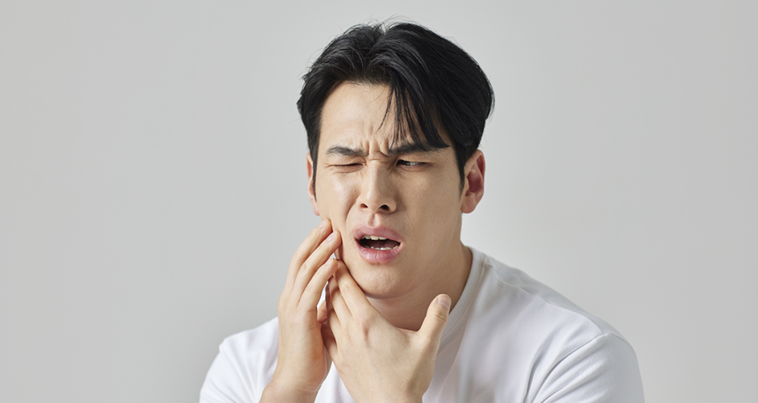
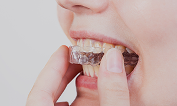
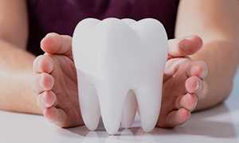
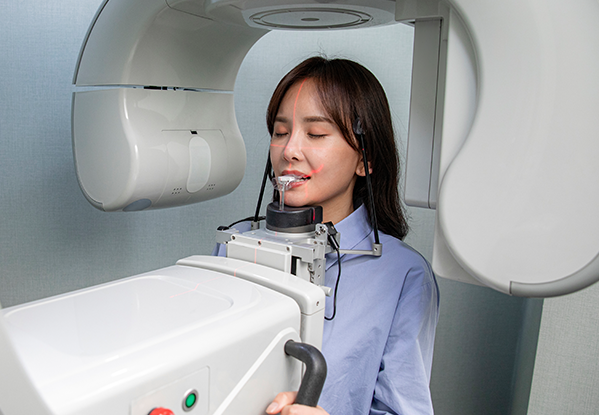
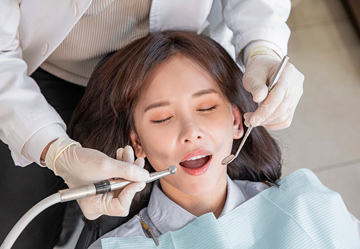
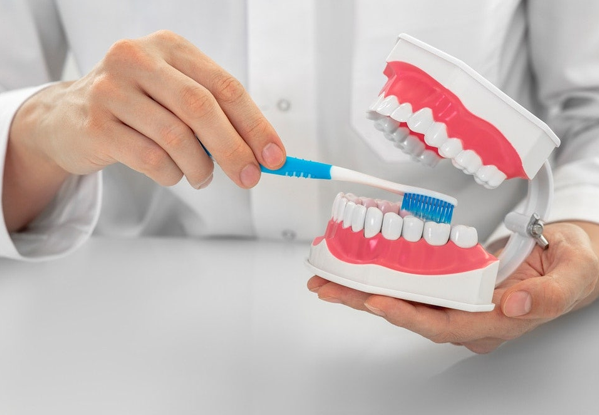
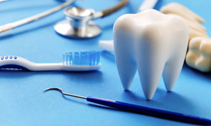

상담 및 진단
환자의 구강 위생 습관, 식습관,
건강 상태 등에 대한 상세한 상담을 통해
구취의 가능한 원인을 파악합니다.
이갈이로 인한 치아 손상과
입 냄새의 원인을 함께 관리합니다
<%=m_client_en%>
치아 손상과 턱관절 장애를 예방하는 이갈이 치료를 진행합니다
이갈이(치아 연삭증)는 잠을 자는 동안 또는 낮 시간에도
무의식적으로 치아를 갈거나 꽉 물어서 발생하는 상태입니다.
이갈이는 치아 손상, 턱 관절 장애, 근육 통증 등 다양한 문제를 유발할 수 있으므로
아래와 같은 증상이나 상황이 있는 경우 치료를 받는 것이 좋습니다.
수면 중 무의식중에 지속적으로 이를 악물거나 수평 방향으로 이를 좌우로 움직이는
이갈이 증상이 지속될 경우 다음과 같은 증상이 나타날 수 있습니다.

현재까지 이갈이를 근본적으로 없앨 수 있는 치료는 없으며,
이갈이로 인해 유발되는 증상 및 징후를 치료하고 예방하는데 치료의 목표를 두고 있습니다.
턱관절 질환 증상과 통증이 발생하는 경우 근육 이완제와 소염제를 복용하여 통증과 근육 긴장을 완화하는 약물치료가 병행됩니다.
턱관절 주변의 저작근과 측두근에 보톡스를 통해 근신경계로 가는 신경전달 물질을 억제하여 비정상적으로 커진 저작근의 힘을 약화시켜 증상을 완화하는 데 도움을 줍니다.

플라스틱 재질의 스플린트 장치를 이용하여 교합력을 고르게 분산시키고 치아가 마모되는 것을 예방하여 턱 근육과 관절에 주는 스트레스를 줄일 수 있습니다.

평소 구강악습관(이 악물기, 한쪽으로 씹기 등)을 찾아 적극적으로 개선하고, 마사지와 찜질을 통해 턱관절 주변 근육을 이완시키는 것이 도움이 될 수 있으며, 심리적인 영향이 크므로 충분한 휴식과 스트레스 관리가 중요합니다.
이갈이로 치아가
손상·마모되어
기능이나 외관에
영향을 줄 때
턱 근육이나 악관절에
지속적인 통증이나
불편함이 있을 때
이갈이로 본인이나
옆 사람의 수면 질이
저하될 때
이갈이로 인한
근육 긴장이
두통을 유발·악화
시킬 때
치아 민감성이 증가하여
차고 뜨겁고 단 맛에
반응이 심해질 때
이갈이가 지속되어
악관절 장애로 발전할
위험이 있을 때
입 냄새의 원인을 정확히 찾아 근본부터 관리합니다
구취는 입이나 인접 기관에서 유래하는 냄새로 자신이나 타인에게 불쾌감을 주는 나쁜 냄새를 말합니다.
자기 자신은 잘 모르는 경우가 많아 다른 사람의 충고를 듣고 나서야 인식하게 되고,
당사자가 느끼는 불편감과 고민은 중증의 질환만큼 큰 경우도 있으며 심리적인 문제와 관련된 경우도 흔합니다.
구취의 약 90%는 입에서 그 원인을 찾을 수 있지만, 입·코·호흡기·소화기 등 다양한 원인으로 발생되므로
어떤 원인으로 입 냄새가 나는지 먼저 체크해 보는 것이 필요합니다.
환자의 구강 위생 습관, 식습관,
건강 상태 등에 대한 상세한 상담을 통해
구취의 가능한 원인을 파악합니다.

치아, 잇몸, 혀 등 구강 전체의 상태를 검사하여
충치, 잇몸 질환, 플라그, 치석 등 구취의 원인이
될 수 있는 요소를 확인합니다.

치석 제거, 스케일링, 폴리싱 등을 통해
플라그와 치석을 제거하고,
구강 위생 상태를 개선합니다.

충치나 잇몸 질환과 같은 구취의 원인 질환을
치료합니다. 필요한 경우 충전, 레진,
잇몸 치료 등을 진행할 수 있습니다.

올바른 양치질 방법, 치실 사용법,
혀 청소 방법 등 구강 위생 관리에 대한
교육을 제공합니다.

정기적인 구강 검진과 전문적인 청소를 통해
구취를 지속적으로 관리할 수 있도록
환자에게 권장합니다.
치아뿐만 아니라 혓바닥, 잇몸, 입천장까지 구석구석 닦아주는 것이 중요합니다. 치간칫솔, 치실 등을 이용해 치아 사이사이 꼼꼼히 닦습니다.
입안이 건조하게 되면 세균 번식이 활발해지므로 입안이 촉촉할 수 있도록 물을 자주 마십니다.
섬유질이 많은 과일이나 채소는 치아 사이의 플라그를 없애는 역할을 하고, 혀의 타액선을 자극해 침의 분비를 촉진시켜 냄새를 없애기도 합니다.
담배는 황화물을 입 안에 쌓이게 하여 구취의 원인이 되고, 음주 역시 구강 내부의 세균을 증식시켜 구강질환을 유발하는 주원인이 됩니다.

오래된 보철물에서 구취가 나는 경우, 불량한 구강위생상태가 원인일 수 있으므로 6개월에 한 번 정기적인 치과검진을 받습니다.
이를 닦아도 냄새,
구취가 느껴지는 경우
입냄새가 난다는
이야기를 들은 경우
입이 자꾸 마르고
냄새가 나는 경우
깔끔한 이미지
관리를 원하는 경우